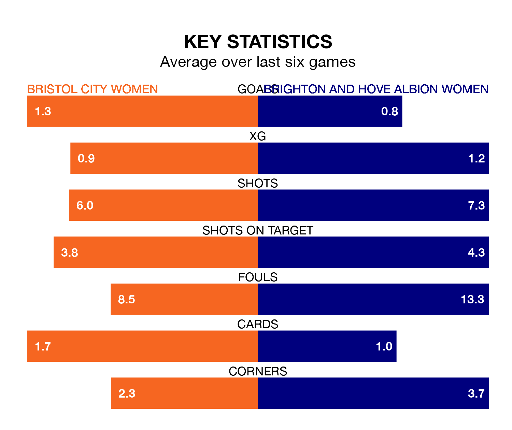

Sunday's early match at Robins High Performance Centre sees the league's two bottom sides face each other, as rock-bottom Bristol City Women host Brighton and Hove Albion Women.
Bristol City have picked up six points from their first six FA Women's Super League games, with one win and three draws.
That is five points less than the Seagulls have collected, having won three and drawn two.
Bristol City are in terrible form in the FA Women's Super League, with no wins and two draws from their last six games.
With a win and a draw over that period, Brighton & Hove Albion's form is slightly better – they have taken four points from 18, compared to the Robins' two.
In the last 10 years, Bristol City and Brighton & Hove Albion have played each other on nine occasions. Bristol City won four of them, Brighton & Hove Albion three, and they drew twice.
On average, the Robins scored 1.3 goals and the Seagulls 0.9 in those matches.
Their last meeting was on January 21, when Brighton & Hove Albion won 3-2 at home.
With 13 goals in 14 games so far this season, the Seagulls are the league's second-lowest scorers with 0.9 goals per game. And they are conceding more than average, letting in 30 goals at a rate of 2.1 per game.
The home team are also below average scorers, with 1.2 goals per game, compared to a league average of 1.6. They have conceded 2.7 goals per game.
Bristol City's last match was on February 18, a 5-2 loss against Leicester City WFC, with Amalie Grønbak Thestrup and Ffion Morgan getting the goals for the Robins.
Brighton & Hove Albion lost 1-0 against Liverpool Women last time out, also on February 18.
Updated: 12:18 (UTC), 19/02/24